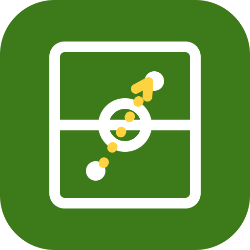
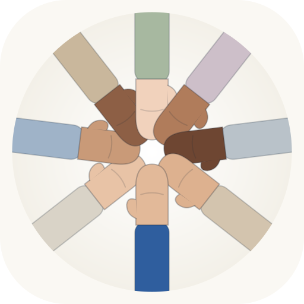

Per a entrenadors i entrenadores
Durant anys he fet feina amb entrenadors i entrenadores de futbol base, com a psicòleg del CE Constància, i per mi l'entrenador és qui més pot fer perquè un jugador aprengui, no només el gest tècnic o tàctic, sinó també a estar atent al que és important de cada jugada i a tornar-hi quan s'ha distret. Aquest espai neix per reunir les eines que us poden ajudar a fer aquesta feina, i l'anirem omplint a poc a poc.
Com a entrenadors hem de donar a conèixer quins són els estímuls rellevants de cada situació de joc: en què s'ha de fixar el jugador, i quan.
Les eines
-
Disponible
Pissarra de l'entrenador · Futbol
Pissarra tàctica animada i quadern d'entrenaments i partits. Cada jugador toca la seva fitxa i veu on és la pilota, en què s'ha de fixar i quan s'ha de moure.
Planifica, dibuixa, explica, valora i millora: del pla a la pròxima sessió. Bàsica gratis; amb la subscripció (4,99 € al mes), enllaços per al grup i fitxes privades, i Claude.
-
Aviat
Pissarra · Bàsquet
La mateixa idea adaptada a la pista de bàsquet: atacs, defenses, sortides de pressió i jugades d'estratègia.
-
Aviat
Pissarra · Voleibol
Rotacions, recepció, cobertures i el sistema de joc de cada equip, explicats a cada jugadora i jugador.
-
Aviat
Pissarra · Handbol
Sistemes defensius, contraatacs i jugades d'atac posicional, amb el paper de cada jugador.
-
Per a clubs
El quadern de l'entrenador
Seguiment setmanal de l'equip amb el psicòleg del club: objectius de procés, una entrevista breu i les tendències de cada jugador.
-
Per a clubs
Els pares també juguen
Per a famílies, delegats i entrenadors: preparar-se abans del partit, una pausa quan el partit ens activa i acompanyar el jugador després.
La pissarra de l'entrenador: del pla a la pròxima sessió
La pissarra acompanya tot el cicle de feina d'un equip: preparar l'entrenament o el partit, explicar a cada jugador on juga i en què s'ha de fixar, valorar com ha anat i, amb tot això, plantejar la sessió següent. Tot parteix del mateix mètode, que el jugador trobi els estímuls rellevants de cada aprenentatge, i per tant cada eina de la pissarra està pensada perquè l'entrenador ho pugui fer sense haver de repetir la consigna a cada jugada.
1 · Planifica
Quadern d'entrenaments i partits, amb la plantilla, el sistema i l'alineació. Amb «Aprenentatge en 5 passes» tries què vols ensenyar (desmarcatge de ruptura, control orientat, activació després de pèrdua, sortida des del porter, pressió coordinada o tornar a la jugada després d'un error) i es creen tres apartats ja dibuixats: exercici analític, dinàmica ecològica i partit condicionat.
2 · Dibuixa
Pissarra animada pas a pas, amb petos de colors, cons, pilotes, fletxes i zones. Cada pas es pot marcar com a moment de pèrdua o de recuperació, perquè el jugador vegi quan ha de canviar el focus. Si escrius un exercici propi, Claude te'n proposa la pissarra i la veus abans d'aplicar-la.
3 · Explica
Cada apartat porta en què s'han de fixar i quan, la condició (què val gol i quin equip la té) i les preguntes per fer després, que només veu l'entrenador. Els jugadors obren l'enllaç, trien el dorsal i veuen la seva fitxa: on juguen i què han de fer a cada pas, també en veu alta.
4 · Valora
En acabar, «Com ha anat»: per a cada apartat, com ha anat i si han trobat els estímuls rellevants, amb una nota que es pot dictar. Als partits, una anàlisi d'un toc: on recuperam i on perdem la pilota, els duels, la sortida, rompre línies, la pressió, contemporitzar, la rematada, per quina banda hi ha perill, els errors no forçats i les ocasions clares.
5 · Millora
Amb aquests feedbacks es forma la memòria de l'equip: el que costa i el que va bé. Claude la fa servir per proposar alternatives d'un exercici i el pròxim entrenament, partint del que ha costat al partit i concretant els estímuls rellevants de cada aspecte: què mirar i quan.
- Gratis
El quadern i la pissarra animada, els aprenentatges en 5 passes amb les pissarres dibuixades, el feedback de cada sessió i l'anàlisi del partit, la memòria de l'equip i enviar els plans com a arxiu.
- Amb la subscripció · 4,99 € al mes
Enllaços curts i xifrats per al grup, la fitxa privada de cada jugador, enviar el quadern a un altre entrenador, i Claude: suggeriments, dissenyar pissarres, alternatives i el pròxim entrenament (fins a 100 consultes al mes).
El quadern es guarda només al mòbil de l'entrenador. Els enllaços es xifren abans de sortir i el servidor no els pot llegir. A Claude només s'envia el que l'entrenador decideix, sense els noms de la plantilla, i abans de cada consulta es mostra què s'envia.
Com aprenem? Cinc passes per a qualsevol aprenentatge
Quan vàrem aprendre a anar en bicicleta, ningú no ens recitava les pautes cada vegada que caiem; simplement ens deien que caure és normal i tornàvem a provar-ho. Molts aprenentatges de conductes automàtiques no necessiten la nostra consciència: basta no transmetre l'errada com un drama, sinó com a part de l'aprenentatge. Ara bé, quan jugam a futbol, qui pren les decisions en mil·lèsimes de segon? No és la consciència, és el cos. I per tant la pregunta és com introduïm aprenentatges complexos des de la consciència a un cos que no és conscient però que és el responsable de la presa de decisions.
- Donar a conèixer el que volem ensenyar, concretant els estímuls rellevants per dur-ho a terme: què han de mirar per fer un desmarcatge, un control orientat, una activació després de pèrdua…
- Exercicis analítics o dinàmiques que fomentin la repetició del gest tècnic o tàctic i ens demostrin que ho entenen: consciència atencional dels estímuls rellevants.
- Ho coneixen i ho entenen, però encara no ho han après. Recordar-los les pautes a cada errada no fa que ho aprenguin abans: és l'experiència la que origina l'aprenentatge.
- Una dinàmica ecològica, amb variables del joc real (dues porteries, un equip guanya i l'altre perd…) i sobretot amb el canvi de focus atencional que demanen les transicions: de defensa a atac quan recuperam la pilota, i d'atac a defensa quan la perdem.
- Condicionar l'acció al reforç natural del futbol, que és poder fer gol. L'atenció passa de manera automàtica a cercar els estímuls rellevants, i l'entrenador ja no ho ha de recordar contínuament: la seva funció passa a ser observar i fer preguntes durant o després de la dinàmica. La condició la té sempre un dels dos equips, i perdre la pilota no vol dir perdre la condició.
Para entrenadores y entrenadoras
Durante años he trabajado con entrenadores y entrenadoras de fútbol base, como psicólogo del CE Constància, y para mí el entrenador es quien más puede hacer para que un jugador aprenda, no solo el gesto técnico o táctico, sino también a estar atento a lo que es importante en cada jugada y a volver a ello cuando se ha distraído. Este espacio nace para reunir las herramientas que os pueden ayudar en esta tarea, y lo iremos llenando poco a poco.
Como entrenadores tenemos que dar a conocer cuáles son los estímulos relevantes de cada situación de juego: en qué se tiene que fijar el jugador, y cuándo.
Las herramientas
-
Disponible
Pizarra del entrenador · Fútbol
Pizarra táctica animada y cuaderno de entrenamientos y partidos. Cada jugador toca su ficha y ve dónde está el balón, en qué se tiene que fijar y cuándo se tiene que mover.
Planifica, dibuja, explica, valora y mejora: del plan a la próxima sesión. Básica gratis; con la suscripción (4,99 € al mes), enlaces para el grupo y fichas privadas, y Claude.
-
Pronto
Pizarra · Baloncesto
La misma idea adaptada a la pista de baloncesto: ataques, defensas, salidas de presión y jugadas de estrategia.
-
Pronto
Pizarra · Voleibol
Rotaciones, recepción, coberturas y el sistema de juego de cada equipo, explicados a cada jugadora y jugador.
-
Pronto
Pizarra · Balonmano
Sistemas defensivos, contraataques y jugadas de ataque posicional, con el papel de cada jugador.
-
Para clubes
El cuaderno del entrenador
Seguimiento semanal del equipo con el psicólogo del club: objetivos de proceso, una entrevista breve y las tendencias de cada jugador.
-
Para clubes
Los padres también juegan
Para familias, delegados y entrenadores: prepararse antes del partido, una pausa cuando el partido nos activa y acompañar al jugador después.
La pizarra del entrenador: del plan a la próxima sesión
La pizarra acompaña todo el ciclo de trabajo de un equipo: preparar el entrenamiento o el partido, explicar a cada jugador dónde juega y en qué se tiene que fijar, valorar cómo ha ido y, con todo ello, plantear la sesión siguiente. Todo parte del mismo método, que el jugador encuentre los estímulos relevantes de cada aprendizaje, y por tanto cada herramienta de la pizarra está pensada para que el entrenador pueda hacerlo sin tener que repetir la consigna en cada jugada.
1 · Planifica
Cuaderno de entrenamientos y partidos, con la plantilla, el sistema y la alineación. Con «Aprendizaje en 5 pasos» eliges qué quieres enseñar (desmarque de ruptura, control orientado, activación tras pérdida, salida desde el portero, presión coordinada o volver a la jugada después de un error) y se crean tres apartados ya dibujados: ejercicio analítico, dinámica ecológica y partido condicionado.
2 · Dibuja
Pizarra animada paso a paso, con petos de colores, conos, balones, flechas y zonas. Cada paso se puede marcar como momento de pérdida o de recuperación, para que el jugador vea cuándo tiene que cambiar el foco. Si escribes un ejercicio propio, Claude te propone la pizarra y la ves antes de aplicarla.
3 · Explica
Cada apartado lleva en qué se tienen que fijar y cuándo, la condición (qué vale gol y qué equipo la tiene) y las preguntas para hacer después, que solo ve el entrenador. Los jugadores abren el enlace, eligen su dorsal y ven su ficha: dónde juegan y qué tienen que hacer en cada paso, también en voz alta.
4 · Valora
Al acabar, «Cómo ha ido»: para cada apartado, cómo ha ido y si han encontrado los estímulos relevantes, con una nota que se puede dictar. En los partidos, un análisis de un toque: dónde recuperamos y dónde perdemos el balón, los duelos, la salida, romper líneas, la presión, contemporizar, el remate, por qué banda hay peligro, los errores no forzados y las ocasiones claras.
5 · Mejora
Con estos feedbacks se forma la memoria del equipo: lo que cuesta y lo que va bien. Claude la usa para proponer alternativas de un ejercicio y el próximo entrenamiento, partiendo de lo que ha costado en el partido y concretando los estímulos relevantes de cada aspecto, qué mirar y cuándo.
- Gratis
El cuaderno y la pizarra animada, los aprendizajes en 5 pasos con las pizarras dibujadas, el feedback de cada sesión y el análisis del partido, la memoria del equipo y enviar los planes como archivo.
- Con la suscripción · 4,99 € al mes
Enlaces cortos y cifrados para el grupo, la ficha privada de cada jugador, enviar el cuaderno a otro entrenador, y Claude: sugerencias, diseñar pizarras, alternativas y el próximo entrenamiento (hasta 100 consultas al mes).
El cuaderno se guarda solo en el móvil del entrenador. Los enlaces se cifran antes de salir y el servidor no los puede leer. A Claude solo se envía lo que el entrenador decide, sin los nombres de la plantilla, y antes de cada consulta se muestra qué se envía.
¿Cómo aprendemos? Cinco pasos para cualquier aprendizaje
Cuando aprendimos a ir en bicicleta, nadie nos recitaba las pautas cada vez que nos caíamos; simplemente nos decían que caerse es normal y volvíamos a intentarlo. Muchos aprendizajes de conductas automáticas no necesitan nuestra conciencia: basta con no transmitir el error como un drama, sino como parte del aprendizaje. Ahora bien, cuando jugamos al fútbol, ¿quién toma las decisiones en milésimas de segundo? No es la conciencia, es el cuerpo. Y por tanto la pregunta es cómo introducimos aprendizajes complejos desde la conciencia a un cuerpo que no es consciente pero que es el responsable de la toma de decisiones.
- Dar a conocer lo que queremos enseñar, concretando los estímulos relevantes para llevarlo a cabo: qué tienen que mirar para hacer un desmarque, un control orientado, una activación tras pérdida…
- Ejercicios analíticos o dinámicas que fomenten la repetición del gesto técnico o táctico y nos demuestren que lo entienden: conciencia atencional de los estímulos relevantes.
- Lo conocen y lo entienden, pero todavía no lo han aprendido. Recordarles las pautas en cada error no hace que lo aprendan antes: es la experiencia la que origina el aprendizaje.
- Una dinámica ecológica, con variables del juego real (dos porterías, un equipo gana y el otro pierde…) y sobre todo con el cambio de foco atencional que piden las transiciones: de defensa a ataque cuando recuperamos el balón, y de ataque a defensa cuando lo perdemos.
- Condicionar la acción al refuerzo natural del fútbol, que es poder marcar gol. La atención pasa de manera automática a buscar los estímulos relevantes, y el entrenador ya no lo tiene que recordar continuamente: su función pasa a ser observar y hacer preguntas durante o después de la dinámica. La condición la tiene siempre uno de los dos equipos, y perder el balón no quiere decir perder la condición.
Dissenya una dinàmicaDiseña una dinámica
Tria un aprenentatge i et proposam una dinàmica seguint les cinc passes. Canvia el que vulguis, adapta-la a l'edat i al nombre de jugadors, i imprimeix-la, o munta-la a la pissarra: s'hi crea un entrenament amb els tres apartats (analític, dinàmica i partit condicionat).
Elige un aprendizaje y te proponemos una dinámica siguiendo los cinco pasos. Cambia lo que quieras, adáptala a la edad y al número de jugadores, e imprímela, o móntala en la pizarra: se crea un entreno con los tres apartados (analítico, dinámica y partido condicionado).
Atenció i maneig emocional
L'atenció d'un jugador pot anar cap enfora, a la jugada, o cap endins, als pensaments, a les emocions i al cos. Totes dues coses són normals, i no és el jugador qui tria a què atén: ho fa el cos, segons els hàbits apresos als entrenaments i les creences sobre la situació. Per això els pensaments i les emocions no es combaten; s'observen, i es torna a la jugada. La clau no és no distreure's mai, sinó adonar-se'n abans i tornar més aviat.

Document per a jugadors i entrenadors (7 pàgines, en català).
Descarrega el PDF
Si voleu que en parlem amb el vostre equip o el vostre club: APRENS Psicologia · C/ Mare de Déu de l'Esperança, 70, 2n · Inca · 636 93 76 61 · info@aprens.es
Atención y manejo emocional
La atención de un jugador puede ir hacia fuera, a la jugada, o hacia dentro, a los pensamientos, a las emociones y al cuerpo. Las dos cosas son normales, y no es el jugador quien elige a qué atiende: lo hace el cuerpo, según los hábitos aprendidos en los entrenamientos y las creencias sobre la situación. Por eso los pensamientos y las emociones no se combaten; se observan, y se vuelve a la jugada. La clave no es no distraerse nunca, sino darse cuenta antes y volver más pronto.
Documento para jugadores y entrenadores (7 páginas, en catalán).
Descarga el PDF
Si queréis que lo hablemos con vuestro equipo o vuestro club: APRENS Psicologia · C/ Mare de Déu de l'Esperança, 70, 2.º · Inca · 636 93 76 61 · info@aprens.es